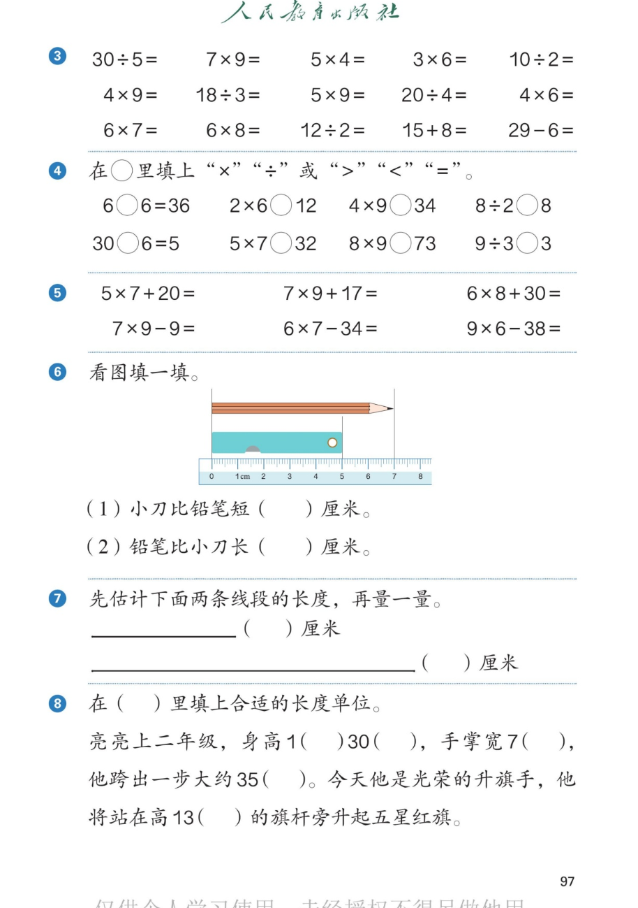

人教版《数学》二年级上册 · 有声图文带读 · 先想后看解析 · 口算过关 · 填符号比大小 · 比长短选单位

、<、=：6○6=36、2×6○12、4×9○34、8÷2○8；30○6=5、5×7○32、8×9○73、9÷3○3。第5题：5×7+20、7×9+17、6×8+30；7×9-9、6×7-34、9×6-38。第6题：看图填一填。直尺上有一支铅笔从刻度0到7，长7厘米；一把小刀从刻度0到5，长5厘米。（1）小刀比铅笔短（ ）厘米。（2）铅笔比小刀长（ ）厘米。第7题：先估计下面两条线段的长度，再量一量。短的一条和长的一条。第8题：在括号里填上合适的长度单位。亮亮上二年级，身高1（ ）30（ ），手掌宽7（ ），他跨出一步大约35（ ）。今天他是光荣的升旗手，他将站在高13（ ）的旗杆旁升起五星红旗。">